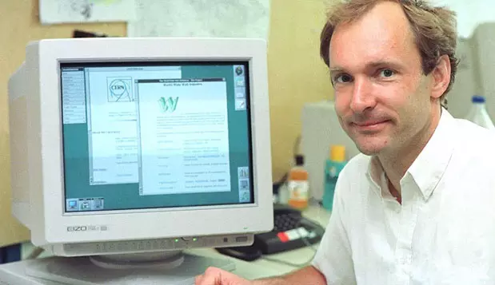

Початок ери веб-сторінок
Спочатку не було нічого. І тоді Великий Вибух на ім'я Тім Бернерс-Лі створив найперший сайт на HTML - гіпертекстовій мові розмітки.
Це відбулося у 1986-1991 роках. Тім розробляв HTML як інструмент для обміну науковими та технічними даними та новинами навіть серед людей, що не вміли верстати сайти.
Перший у світі сайт з'явився 6-го серпня 1991 року. На ньому був опис нової технології World Wide Web (славнозвісної www), заснованої на протоколі передачі даних HTTP, системи адресації URL та мови гіпертекстової розмітки HTML.
Також на сайті були написані принципи встановлення і роботи серверів та браузерів.
На цій сторінці пізніше Тім розмістив посилання на інші сайти, зробивши його першим інтернет-каталогом.
Перші сайти, перші провайдери, перші веб-дизайнери. Монітори з роздільною здатністю 640х480, що підтримують всього 16 кольорів (!). Чорний текст, сині посилання, червоні або рожеві заголовки. Краса!

Ера Flash, GIF та табличок
Наприкінці 1993-го у мережі стався довгоочікуваний «прорив» — з'явився перший графічний браузер Mosaic, який започаткував поліпшення візуальної передачі інформації. З того часу історія веб-дизайну почала розвиватися скаженими темпами. За кілька років кількість сайтів в інтернеті зросла з кількох сотень до десятків тисяч. |
У 1996-му році в оформленні веб-сторінок з'явилися анімовані GIF-зображення, строкаті фони та надто яскраві заголовки. У HTML та веб-дизайні стали активно використовуватися таблиці, за допомогою яких структурувалася вся інформація на веб-сторінці. |
|---|
Створення та розвиток WEB 2.0
CSS
Еще один качественный прорыв история развития web-дизайна совершила в 2000-е годы, когда технология CSS (Cascading Style Sheets) позволила отделить содержимое веб-страниц от их оформления. 2004–2006 годы считаются началом эры WEB-2.0.
Приклад коду
Якщо раніше користувач прописував всі потрібні значення прямо у коді (наприклад, щоб зробити текст червоним і курсивним, його потрібно було прописувати як <p style="color:red"><i>Деякий текст</i></p>, )
В сайтах використовували:
- плавні градієнти і м'які кольори;
- об'єкти скругленої форми;
- зеркальность, глянець, карамель в кнопках, картинках;
- паттерни на фоні.
Мобільна ера
Для демонстрації роботи сайту відносно розміру екрану, я використав блок сайту, створеного мною раніше.
Day Pass
$25
per dayThis is a wider card with supporting text below as a natural lead-in to additional content. This content is a little bit longer.
Nightly Pass
$15
per nightThe Nightly Pass provides full access during our night-time hours. Night access at FreeSpace anti-cafe is fully automated, and so customers will receive a key fob.
7-Day Pass
$125
one weekWith the 7-Day Pass customers can pick and choose which days they want to come in during daily hours. You get full access to the space and equipment for 7 days.
Скевоморфічна ера
У 2010 році веб-дизайнери продовжують використовувати CSS і HTML, однак все частіше починають застосовувати нову концепцію під назвою «адаптивний веб-дизайн», яка передбачає відображення однакового вмісту за допомогою різних форм макетів. При цьому розуміння «адаптивності» у клієнтів та розробників зазвичай суттєво відрізняється.
Клієнт виходить з думки, що якщо сайт має адаптивний дизайн, то він «...добре працюватиме на телефоні». Розробник же, в першу чергу, думає про кількість начерків макета, смислове навантаження елементів, швидкість завантаження контенту, візуальні способи подання інформації, пріоритет десктопної або мобільної версії і т.д.
У 2011-му році у веб-дизайнерів нарешті починає з'являтися художній смак, і на зміну «карамельній» моді приходить натуралістичний дизайн, або скевоморфізм.
Характерними рисами скевоморфізму можна назвати "шкіряний" фон програми-календаря у iOS або тривимірну іконку "сміттєвого кошика".
Спрощення світу
З 12 року починається ера спрощення. Скевоморфізм став лайливим словом, візуальні елементи були максимально спрощені, пріоритет віддали вмісту. Так виник термін «плоский дизайн».
Глянцеві тривимірні кнопки були замінені плоскими векторними іконками та веб-шрифтами (прямо як на світанку веб-дизайну в 1990-ті), підтверджуючи вираз «Все нове – це добре забуте старе». У тренді також яскраві кольори, цікава друкарня, великі фонові зображення та навіть фонове відео.